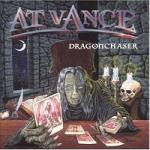

|
|
||
At Vance : Dragonchaser (2001) |
|

http://www.at-vance.com |
1. Dragonchaser 4:27 |
6.5/10 |
|
Vuelve el grupo de power metal alemán At Vance y no vuelve demasiado fuerte. At Vance hace un power metal bastante típico, con teclados, doble bombo, dragones y guerreros, pasajes neoclásicos y una voz que sin destacar especialmente no hace un mal trabajo, pero nunca han estado en el lado más potente del power metal. Y en este disco menos que nunca. Demasiadas canciones lentas y pocos momentos brillantes para formar un disco aceptable, con cosas interesantes, pero que no es realmente bueno. "Dragonchaser" es una buena canción. La introducción instrumental neoclásica es brillante, el ritmo, llevado por el doble bombo, bastante rápido y el estribillo no está mal, aunque es quizás demasiado corto para destacar. La segunda, "Ages of Glory" es quizá mi favorita. De ritmo trepidante, melódica, gracias sobre todo al soporte de los teclados, y con cambios de ritmo para aportar variedad. Los solos de guitarra son también vertiginosos. "Crucified" es algo más lenta y oscura, tiene un cierto aire de hard rock años 70, y realmente no destaca por nada. La cuarta pista es una interpretación neoclásica de la conocida quinta sinfonía de Beethoven. La interpretación está bien, la batería y las guitarras le aportan potencia sin quebrar el espíritu de esta pieza, pero en lugar de ocho minutos podría durar dos, puesto que prácticamente se limitan a repetir lo mismo una y otra vez, con pequeñas variaciones que no aportan gran cosa al conjunto. "Heaven Can Wait" es una balada soportada por las guitarras acústicas y los teclados, aunque la batería se oye bastante. Poca variedad, algunos coros aquí y allá, casi sin estribillo, en suma: bastante sosa. "The Winner Takes it All" es otra balada, algo más rápida que la anterior, con algún solo de guitarra interesante, pero que tampoco termina de convencer. El séptimo corte, "My Bleeding Heart" es ¡otra balada más!. Quizás un poco más conmovedora que las anteriores, y con algunas partes a varias voces que le dan más consistencia, pero tampoco esta es una buena canción. Tras las tres baladas, se agradece la siguiente pista, "Two Kings", donde vuelve la velocidad, aunque tampoco demasiado. El estribillo no está mal y las partes instrumentales están trabajadas y suenan bien. "Too Late" mantiene el ritmo rápido y los riffs más afilados del disco. La voz sube a un tono más alto que en el resto del álbum, dando todo lo que tiene. Algún cambio de ritmo aquí y allá, algunos riffs neoclásicos, y de nuevo una canción que, sin ser mala, no destaca salvo por las partes instrumentales. "Ases Death" es una canción instrumental, de ritmo bastante lento y en la que las mejores partes son los solos de guitarra, haciéndose el resto bastante pesado. |
||
Rubén Béjar |
||